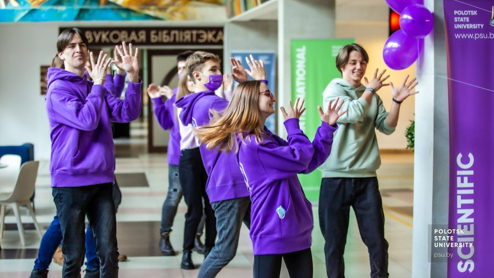

Университет представляют собой разнообразные сообщества, которые объединяют студентов
с общими интересами и целями. Они могут быть ориентированы на науку, искусство, спорт, волонтерство или другие области.
Участие в таких организациях помогает студентам не только проявить свои таланты, но и развить навыки руководства и организации,
которые будут полезны в будущей карьере.
Студенческие организации представляют собой разнообразные сообщества, которые объединяют студентов
с общими интересами и целями. Они могут быть ориентированы на науку, искусство, спорт, волонтерство или другие области.
Участие в таких организациях помогает студентам не только проявить свои таланты, но и развить навыки руководства и организации,
которые будут полезны в будущей карьере.

В целом, активность в университете может стать ключевым фактором для успеха и удовлетворения в будущем,
поэтому студентам стоит воспользоваться всеми возможностями, которые предоставляют студенческие организации и другие формы активности.